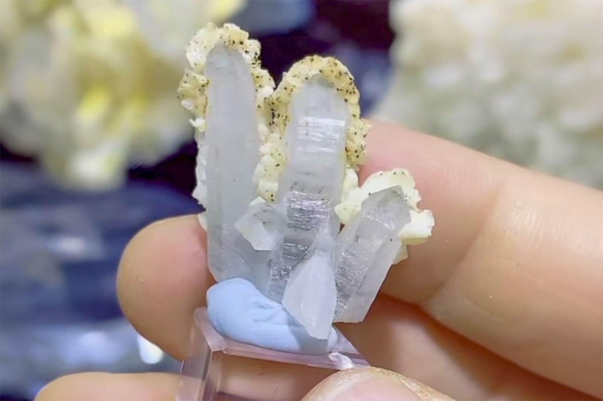

Quartz with Prefrential Dolomite Coating, Minor Chalcopyrite Scheelite, Schorl (?)
"Quartz Trident with Dolomite TN"
VIII-09800
Yaogangxian Mine, Yaogangxian W-Sn ore field, Yizhang Co., Chenzhou, Hunan, China
Purchased 3/18/2026 from 7 Minerals Mine for $10.00
Core Collection • In Collection
Details
Storage Type: Flat
Storage Location: 000 Unassigned
Size class: Thumbnail (0)
Dimensions: 2.4 × 1.4 × 2.4 cm
Estimated Mass: 4.6 g
Luster: Average, Vitreous